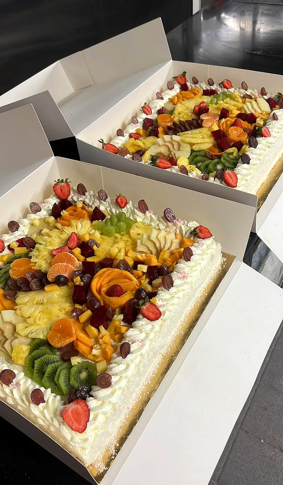
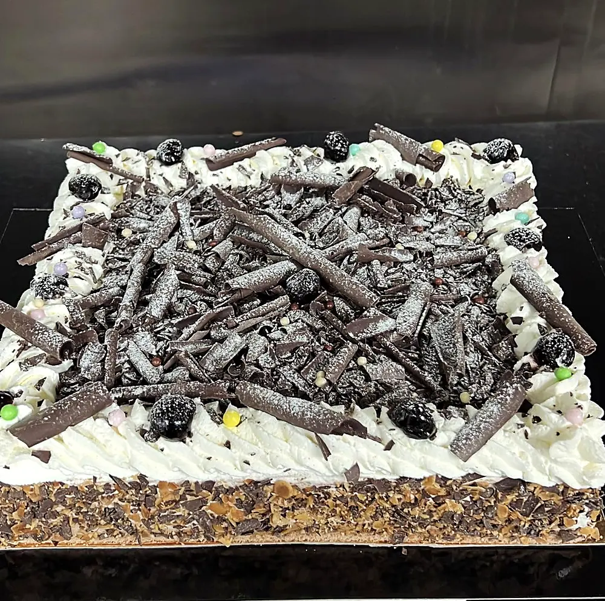
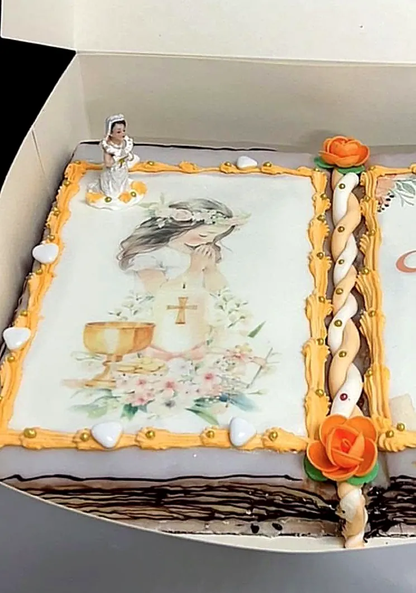
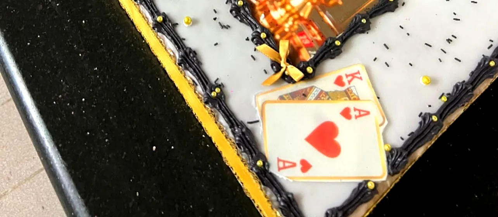
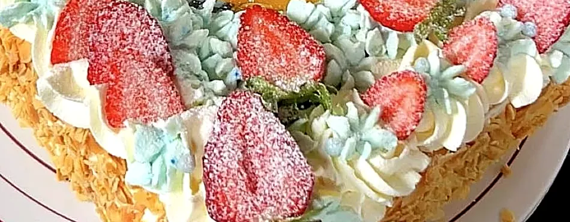
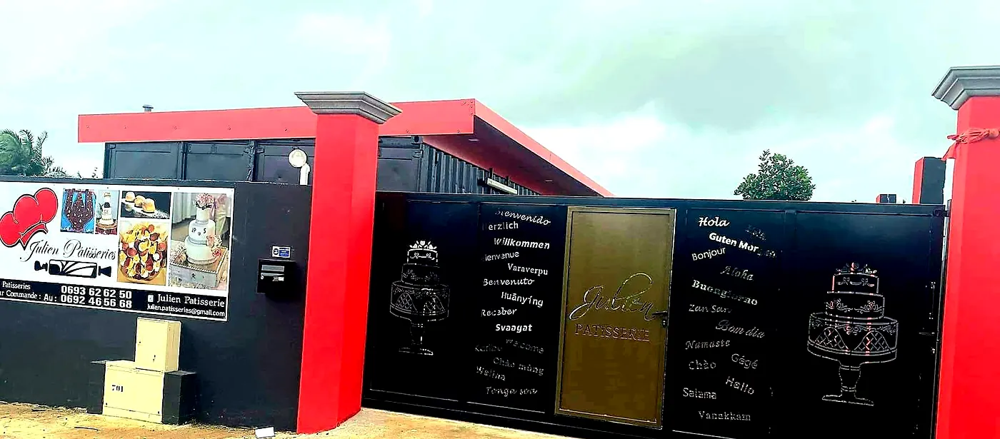

Artisan pâtissier · Sainte-Suzanne, La Réunion
Julienpatisseries
Sur commande depuis 2017, un large choix de pâtisseries pour tous vos évènements.
49 chemin la croix, Sainte-Suzanne · 0693 62 62 50
L'artisan
Julien, pâtissier sur commande
À Sainte-Suzanne, Julien imagine et réalise chaque pâtisserie à la demande : pièces montées, entremets, gâteaux aux fruits frais ou gâteaux personnalisés, pour accompagner vos plus beaux moments.
« Un large choix de pâtisseries pour tous vos évènements. »
Crème vanille, chocolat intense, croustillant praliné, fruits frais et dorures : chaque création se prépare avec soin, pour une table de fête qui fait plaisir aux yeux comme aux papilles.

Les créations
Ce que Julien prépare pour vous
Quelques créations publiées sur la page de Julien patisseries.

Publiée le 10 juin 2026
Une pièce montée en forme de livre
Un livre ouvert tout en pâtisserie : pages crème, cadre doré, perles, ruban tressé et roses en sucre. Une idée magnifique pour une communion ou un grand jour à raconter.
Demander la vôtre
L'entremets de Pâques
Crème allégée vanille, crème chocolat intense, base génoise et croustillant praliné amande noisette.
Le Fraisier
Le fraisier de la Fête des Mères, « pour la plus belle des Mamans ».
Gâteau chemin de fer d'antan
Le classique d'autrefois, à la crème pâtissière.
Tarte Poire Signature
La tarte aux poires de Julien, en 8 à 10 parts.
Choco Dubaï
« Choco Dubaï disponible » : la gourmandise chocolatée annoncée sur la page en mai 2026.
Gâteau personnalisé
Votre gâteau personnalisé : la pièce montée avec impression.
Les créations du moment sont annoncées sur la page Facebook de Julien patisseries.
Pour tous vos évènements
Un gâteau pour chaque grand jour
Communion, gâteau personnalisé, fête des mères ou des pères, Pâques : Julien prépare la pâtisserie qui fera le cœur de votre fête.
Écrivez à Julien sur WhatsApp ou appelez le 0693 62 62 50.
Racontez votre évènement : le nombre de personnes, vos envies, votre message.
Julien prépare votre pâtisserie sur commande, à Sainte-Suzanne.

Fait avec cœur, à Sainte-Suzanne
Fêtes de fin d'année
Votre dessert des fêtes, signé Julien
Une bûche ou un entremets
Pour terminer le repas de fête en douceur, en famille ou entre amis.
Une pièce montée
Pour les grandes tablées du réveillon et du Nouvel An.
Une douceur à offrir
Une pâtisserie de Julien, le cadeau gourmand qui fait plaisir à toute la famille.
Pensez à réserver tôt votre commande des fêtes : Julien vous répond avec plaisir.
Réserver sur WhatsAppCommander
Passez commande chez Julien
Adresse · 49 chemin la croix, 97441 Sainte-Suzanne
Téléphone · 0693 62 62 50
E-mail · julien.patisseries@gmail.com
Formule · sur commande, pour tous vos évènements
